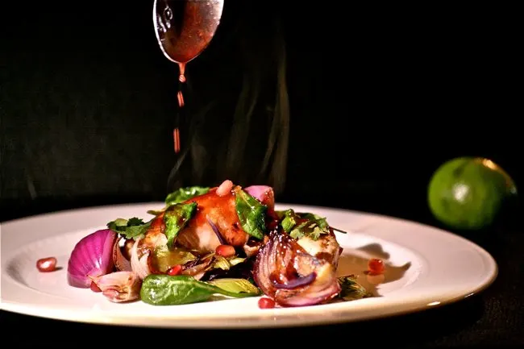

POMEGRANATE CHICKEN

Get all the flavors of pomegranate in this chicken, with juice and seeds you will love this pomegranate chicken
more info
- prep time:20 minuts
- duration: 30 minuts
- cook time:10 minuts
- servings:3-4
ingredients:
- 2 tablespoons honey
- 3 limes, juiced
- 3/4 cup bottled pomegranate juice
- 1 cup canola oil
- 2 tablespoons sesame oil
- kosher salt
- pepper
- 4 6-8 oz boneless and skinless chicken breasts
- 1 12 oz package field greens
- 1 head radicchio, cut to bite size pieces
- 2 cups (about 2 bunches) arugula, cut to bite size pieces, stems removed
- 1 cup sun dried cranberries
- 1/2 toasted pecans (optional)
- 4 clementine oranges, separated into sections, cut in half
- 1 pomegranate, quartered and seeds reserved
Instructions:
- Meanwhile prepare the salad by combining the field greens, radicchio and arugula. Toss in the cranberries, pecans if desired, clementine sections and pomegranate seeds. Add in the reserved dressing and place onto individual plates. Arrange the sliced chicken atop the salad. Serve at room temperature.
- In a small bowl, combine the honey, lime and pomegranate juices. Whisk in the canola and sesame oils. Season with salt and pepper. Pour half this liquid into a small container and reserve. Place the remaining liquid in a 1 gallon zip tight bag. Add in the chicken breasts and allow to marinate for 2 - 4 hours, refrigerated.
- Remove the chicken breasts from the marinade and discard liquid. Grill the chicken breasts over medium high flame. When cooked through, allow to cool a few minutes, and then cut into long strips, about ” wide
- Meanwhile prepare the salad by combining the field greens, radicchio and arugula. Toss in the cranberries, pecans if desired, clementine sections and pomegranate seeds. Add in the reserved dressing and place onto individual plates. Arrange the sliced chicken atop the salad. Serve at room temperature.